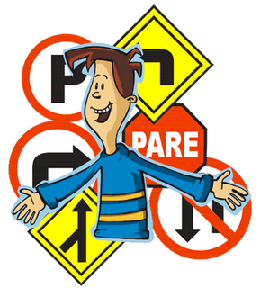

JORNADAS DE ESTUDIO
- LICENCIAS TIPO C - NOCTURNA Y FINES DE SEMANA
- LICENCIAS TIPO D y E – FINES DE SEMANA .
PROCESO DE ADMISION Y MATRICULACION
ADMISION
- 1. REALIZARSE LOS EXÁMENES MEDICOS, PSICOLOGICOS Y PSICOSENSOMÉTRICOS
- 2. POSEER ORIGINAL Y COPIAS A COLOR DE CEDULA DE IDENTIDAD, PAPELETA DE VOTACION Y TIPO DE SANGRE .
- 3. SER BACHILLER
- 4. LICENCIA TIPO D CONVALIDADA
- 4.1. POSEER LICENCIA PROFESIONAL TIPO C ORIGINAL Y COPIA
- 4.2. CERTIFICADO DE LA ANT DE LOS PUNTOS DISPONIBLES EN SU LICENCIA
- 5. LICENCIA TIPO E CONVALIDADA
- 5.1. POSEER LICENCIA PROFESIONAL TIPO C o D ORIGINAL Y COPIA
- 5.2. CERTIFICADO DE LA ANT DE LOS PUNTOS DISPONIBLES EN SU LICENCIA
MATRICULACION
- 1. HABER APROBADO LOS EXAMENES MEDICOS, PSICOLOGICOS Y PSICOSENSOMÉTRICOS
DOCUMENTOS PARA LA MATRICULA
- 1. TRES FOTOS A COLOR ACTUALIZADAS TAMAÑO CARNET
- 2. ORIGINAL DEL CARNET DE TIPIFICACION SANGUINEA
